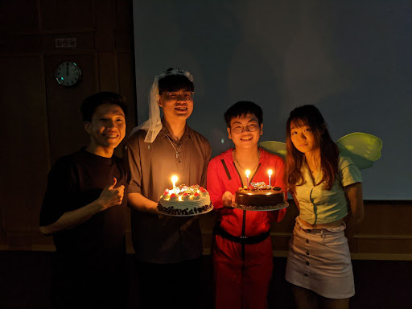
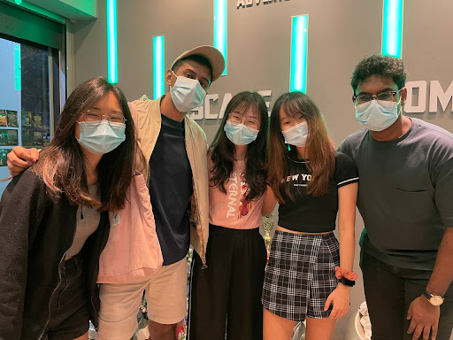
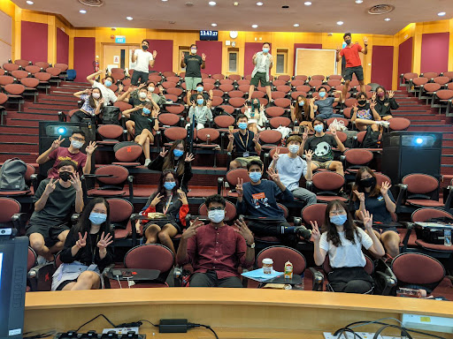
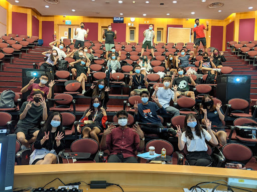
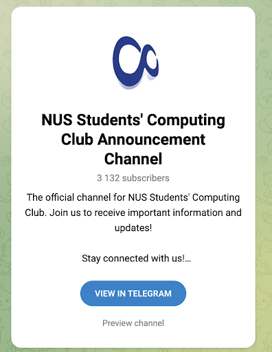
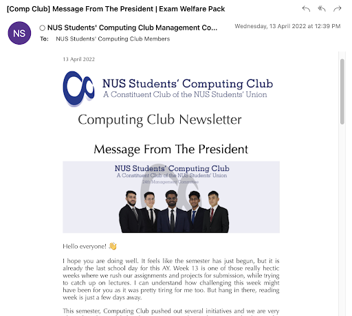
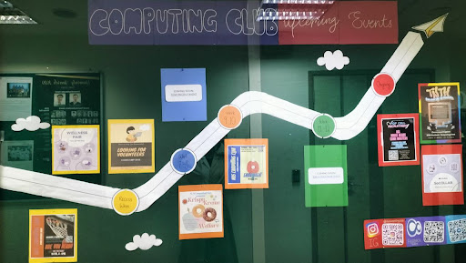

Presidential Wing
The NUS Students' Computing Club, colloquially referred to as the Computing Club, is a constituent club under the NUS Students' Union (NUSSU). It comprises and represents all undergraduates pursuing a degree in NUS School of Computing.
Introduction
The President of Computing Club, together with the Vice Presidents, leads the club and
makes crucial
decisions for the club and the faculty.
The role of the president falls under 2 main areas: Club Matters & Faculty Matters.
Roles
Club Matters
The President works with various members of the Presidential Wing (P Wing) to oversee club matters. This includes:
- Working with the General Secretaries to hold MC Meetings and P Wing Meetings.
- Working with the Finance Secretaries to oversee Club Finances and ensure that the Club spendings are all appropriate.
- Working with the Tech Leads to have the Computing Club Website and have it updated for the various occasions (Introduction of the MC, FOP period, Elections).
- Interacting with the VPs of the different wings to understand all club happenings and render support wherever necessary. During P Wing meetings, the President ensures that the entire Club is in sync and the various Wings are all complementing and helping one another.
- Being on the ground for the events and interacting with the subcommittee members to encourage and support them.
Faculty Matters
Computing Club represents all the Computing Undergraduates and is their voice. The President is not only in charge of club happenings, but also various things in the faculty. This includes:
- Constant interaction with the student body (speeches, email blasts, etc.) to understand any concerns or issues they may be facing and bringing these up to the relevant offices in the school.
- Working with the School Leaders (Dean & Vice Deans) to address these issues and consider ways to make the life of every student better.
- Working with various offices in the University (OSA, OFN, OCA, etc.) to address any university level issues. For example, I had to speak with the Office of Campus Amenities (OCA) to think of ways to retain Cool Spot in COM2 when their initial plan was to have it removed upon the opening of COM3.
- Participating in NUSSU meetings and discussions and representing the faculty and club in these decision making processes.
Experience
It was a very new and enriching experience. As the president, you have the birds eye view of the entire
club. You get to see exactly how every member in the club is working and how the various cells are
working together to support the club and faculty.
I went in thinking I'm the President of the Club and my job is to oversee the Club happenings. But very
soon after taking over, I realised that the job is more than that. I also need to oversee all faculty
happenings as well.
When being in charge of such a large institution, a lot of things get directed at you and lots of
unexpected things will pop up. As a President, you need to stay strong and handle all of these issues
calmly and efficiently. From my personal experience, this is only possible if you are confident about
your team. So one learning point is that keeping the entire team strong and united is extremely
crucial.
One of my favourite memories is at the very start of our term. When everyone was fresh and super
motivated to embark on this journey. Seeing everyones energy and the big plans they had for SoC made me
really excited as well. So glad the team was able to maintain the energy all the way and deliver
everything they promised!


Introduction
Our vision is to build a well organised 🗂 and ✨bonded committee✨, where all club records
are managed responsibly and members of the Management Committee are united as one. 💖
As the general secretaries of the club, we work closely with members of the presidential wing to
facilitate the overall operation and conduct of the Computing Club Management Committee and take charge
of all club records responsibly. 📖 Additionally, we also seek to look after the wellbeing of our
members and promote bonding between all members of the Management Committee. 💃🕺
Roles
Apart from maintaining admin work such as the Computing Club Telegram Channel, weekly
faculty newsletter, locker applications, club meetings and so on, we are also the ones responsible for
the welfare of our club members. We frequently organize bonding activities including club wide
cohesions, birthday celebrations, welfare packs and customized gifts as a token of appreciation for the
efforts put in by our members. During the monthly club meetings and milestone presentations, we would
design bonding games and prepare refreshment for members to recharge in between serious conversations.
Given the nature of our work, we are able to build meaningful relationships not just between us and the
rest of the club, but also between members from different cells.
The friendships we make and build here are the ones that will continue to stay dear to our hearts even
after many years.
Events
Club Well Being: Birthdays, Cohesions, Welfare
 Club Meetings: Presidential Wing, MC, Milestones
 

Club Outreach:Telegram, Newsletter, MC Organization Chart, Lockers, Noticeboards
  Introduction
The Finance Cell aims to oversee all the financial matters of the Computing Club. This includes the club's budget allocation, approval of all purchases and sponsorships made and reimbursement of funds within the club.
Roles
The Finance Cell ensures that all transactions are smoothly processed and in accordance with the financial guidelines and procedures outlined. The Finance Cell also works towards providing a transparent and comprehensive view of the financial processes within the club, thereby assisting the operations for the other cells of the club.
Experience
Relative to other roles, we might not have the most fun in terms of planning or engaging in school activities. However, we have learnt a lot in terms of liaising with many internal and external stakeholders for various collaborations. Processing RFPs is definitely the highlight of our roles!
Events
We don't have any events… BUT that means we can WFH 24/7!
Introduction
The Tech Leads (TL) build apps and manage the tech infrastructure Computing Club runs on.
- At the lowest level, the TL cell manages the online profiles of every existing member in and affiliated to the Computing Club Management Committee. This means creating custom @nuscomputing emails and custom GDrives.
- Aside from that, TL builds, deploys, and maintains the websites on the xyz.nuscomputing.com domain. This means manning the Computing Club GitHub account.
- Working with the Tech Leads to have the Computing Club Website and have it updated for the various occasions (Introduction of the MC, FOP period, Elections).
- TL can also suggest existing platforms and apps the CC members can use to maximise productivity (eg: Notion, Trello, etc.)
Roles
Depending on how involved you wish to be, you can mostly stick to the safe stuff like managing user profiles and just the main website. You can take it to the next level by building apps and custom platforms depending on the needs and wants of the MC.
You can learn web development, UI/UX, and can get better at finding quick tech solutions to existing problems that hinder productivity. You even learn to present these solutions in a digestible manner to the rest of the MC and professors during meetings. You get to decide the toolkit for the MC!